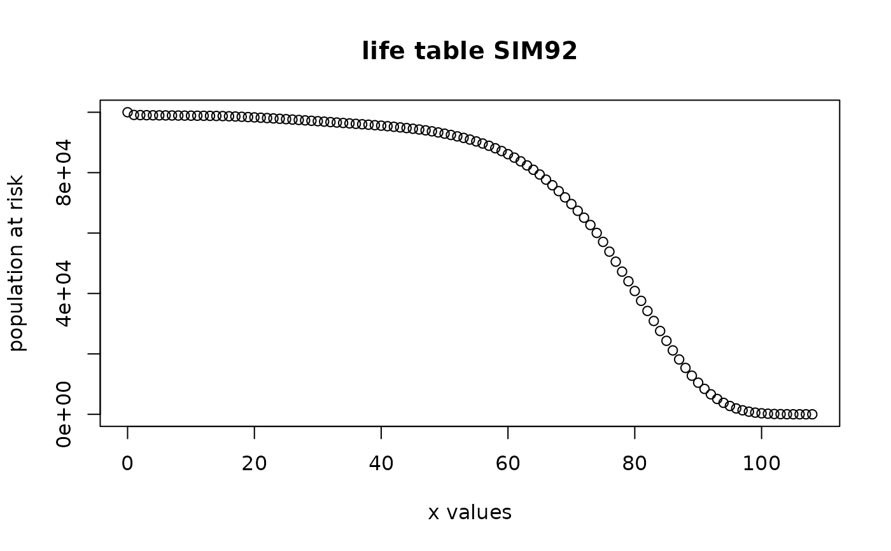

demoIta.RdThis dataset reports five pairs of Italian population life tables. These table can be used to create life table objects and actuarial tables object.
data(demoIta)A data frame with 121 observations on the following 9 variables.
Xa numeric vector, representing ages from 0 to \(\omega\).
SIM02a numeric vector, 2002 cross section general population males life table
SIF02a numeric vector, 2002 cross section general population females life table
SIM00a numeric vector, 2000 cross section general population males life table
SIF00a numeric vector, 2000 cross section general population females life table
SIM92a numeric vector, 1992 cross section general population males life table
SIF92a numeric vector, 1992 cross section general population females life table
SIM81a numeric vector, 1981 cross sectional general population males life table
SIF81a numeric vector, 1981 cross sectional general population females life table
SIM61a numeric vector, 1961 cross sectional general population males life table
SIF61a numeric vector, 1961 cross sectional general population females life table
RG48Ma numeric vector, RG48 projected males life table
RG48Fa numeric vector, RG48 projected females life table
IPS55Ma numeric vector, IPS55 projected males life table
IPS55Fa numeric vector, IPS55 projected females life table
SIM71a numeric vector, 1971 cross sectional general population males life table
SIM51a numeric vector, 1951 cross sectional general population males life table
SIM31a numeric vector, 1931 cross sectional general population males life table
These table contains the vectors of survival at the beginning of life years and are the building block of both
lifetable and actuarialtable classes.
These tables comes from Italian national statistical bureau (ISTAT) for SI series, government Ministry of Economics (Ragioneria Generale dello Stato) for RG48 or from Insurers' industrial association IPS55. RG48 represents the projected survival table for the 1948 born cohort, while IPS55 represents the projected survival table for the 1955 born cohort.
ISTAT, IVASS, Ordine Nazionale Attuari
#load and show
data(demoIta)
head(demoIta)
#> X SIM92 SIF92 SIF00 SIM00 SIM02 SIF02 RG48M RG48F IPS55M
#> 1 0 100000 100000 100000 100000 100000 100000 100000.00 100000.00 100000.00
#> 2 1 99112 99301 99543 99479 99535 99604 99526.10 99594.70 99682.06
#> 3 2 99061 99253 99513 99450 99506 99578 99499.83 99568.01 99663.92
#> 4 3 99025 99219 99492 99427 99484 99558 99482.42 99550.78 99649.15
#> 5 4 98997 99195 99477 99409 99467 99544 99468.69 99537.54 99637.33
#> 6 5 98974 99175 99465 99394 99453 99531 99456.95 99526.59 99627.63
#> IPS55F SIM31 SIM51 SIM61 SIF61 SIM71 SIM81 SIF81
#> 1 100000.00 100000 100000 100000 100000 100000 100000 100000
#> 2 99632.80 88468 93247 95427 96209 96920 98313 98684
#> 3 99607.54 85020 92292 95052 95851 96770 98225 98607
#> 4 99586.48 83895 91965 94885 95698 96676 98163 98554
#> 5 99569.64 83272 91772 94771 95596 96610 98117 98517
#> 6 99555.80 82846 91630 94683 95519 96552 98080 98489
#create sim92 life and actuarial table
lxsim92<-demoIta$SIM92
lxsim92<-lxsim92[!is.na(lxsim92) & lxsim92!=0]
xsim92<-seq(0,length(lxsim92)-1,1)
#create the table
sim92lt=new("lifetable",x=xsim92,lx=lxsim92,name="SIM92")
plot(sim92lt)
